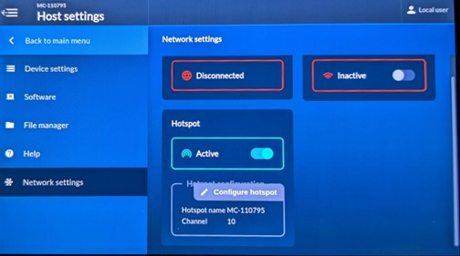
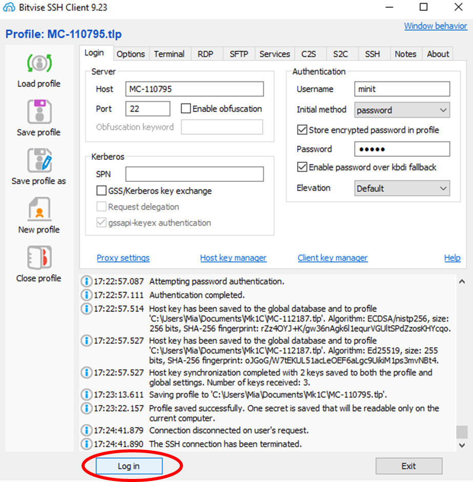
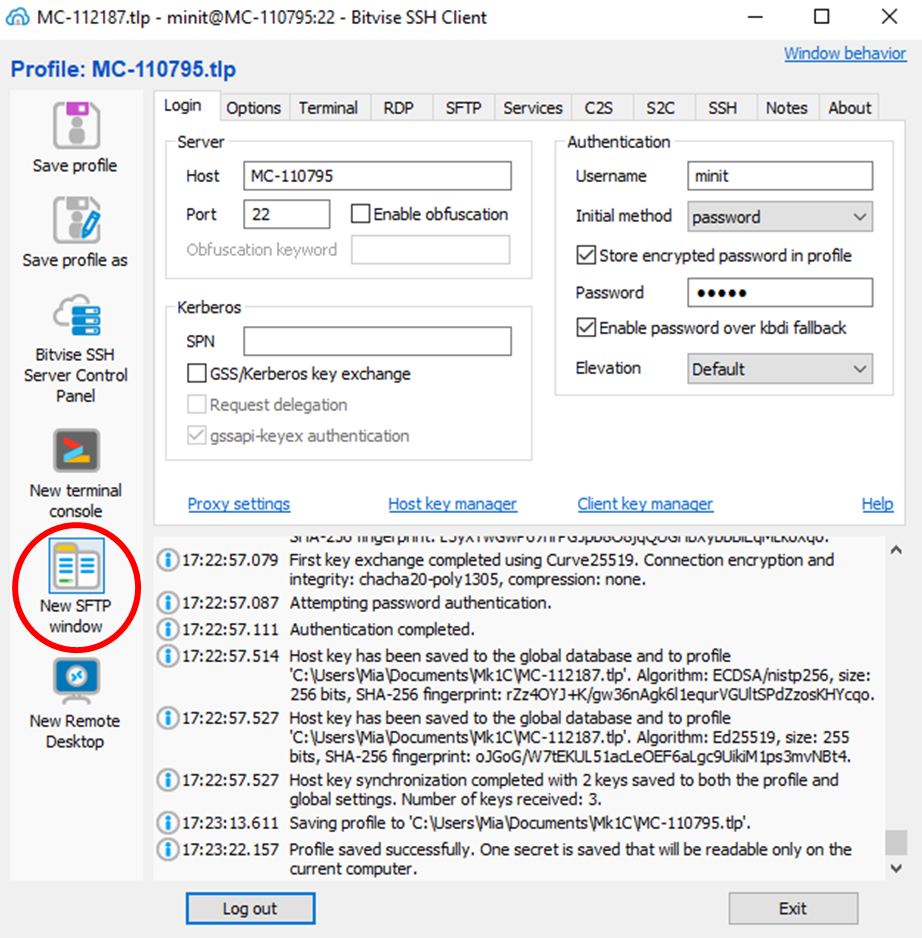
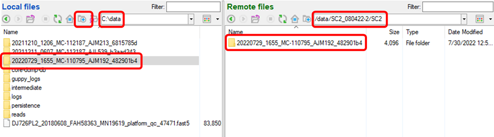
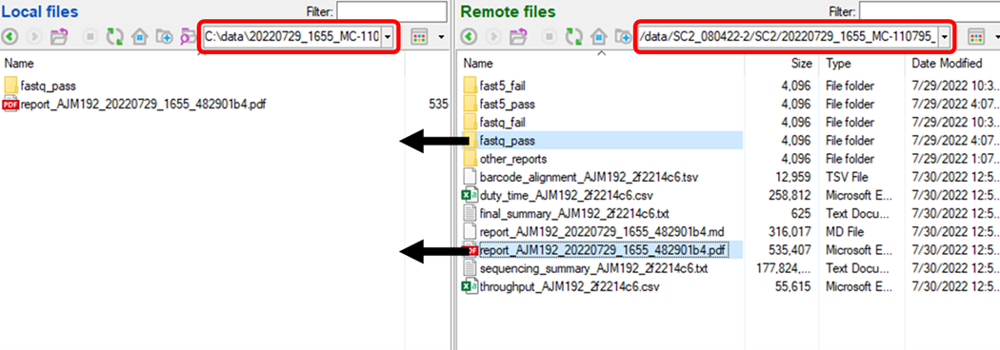

Local Data Transfer from the Mk1C Sequencing Device for Downstream
Analysis
Once your MinION Mk1C sequencing run completes, these
instructions detail how to transfer your reads from the machine to your
computer, staging them for assembly and analysis with MIRA
1. Install Bitvise SSH Client
Click Here
to install Bitvise SSH Client
2. Establish a Connection to the MinION Mk1C
- From the MinION Mk1C main menu, navigate to host settings then
network settings
- Disable WiFi and activate the Hotspot
- Note the hotspot name (MC-######)
- Optional, change the Hotspot network name and password 
- From the laptop, connect to the WiFi network that matches the Mk1C
hotspot name
- Enter the default password WarmButterflyWings98 or the updated
password
- Note the laptop will not have internet access after this step
3. Move the Sequencing Data
- Open bitvise SSH client
- Enter the login information for the MinION Mk1C
- Host: MC-######
- Username: minit
- Initial method: password
- Password: minit
- Enable password over kbdi fallback
- Elevation: Default
- Login

- Open a new SSH File Transfer Protocol (SFTP) window

- Prepare the ExperimentID folder
- In Local files, navigate to Linux –> home –> [user] –>
FLU_SC2_SEQUENCING (Windows) or home –> FLU_SC2_SEQUENCING (Mac)
- In Remote files, navigate to /data/[ExperimentID]/[SampleID] and
copy the RunID to the clipboard
- The RunID is generated by the MinKNOW software and is formatted:
- YYYYMMDD_HHMM_MC-######[FlowcellID][ID]
- ex. 20220729_1655_MC-110795_AJM192_482901b4
- Two slow clicks, Ctrl+C
- On the left (in Local Files), create a new folder, paste the RunID,
and open that folder

- Move the data
- On the right navigate remote files to
/data/[ExperimentID]/[SampleID]/[RunID]
- On the left (local files), you should already have navigated to
FLU_SC2_SEQUENCING/[RunID]
- Drag the fastq_pass folder from the remote files window to the local
files window
- Optional: drag the report.pdf from the remote files window to the
local files window

You now have staged yout Mk1C fastqs for analysis! You can proceed to
Running MIRA